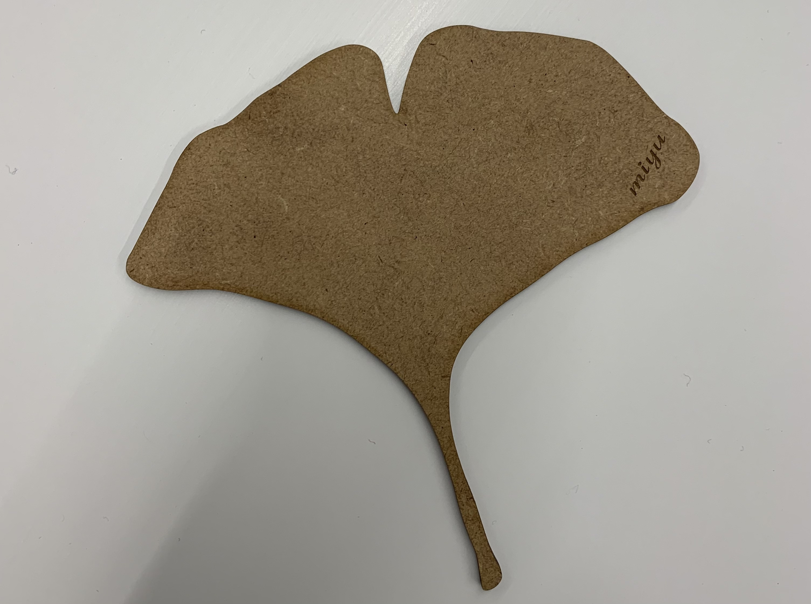
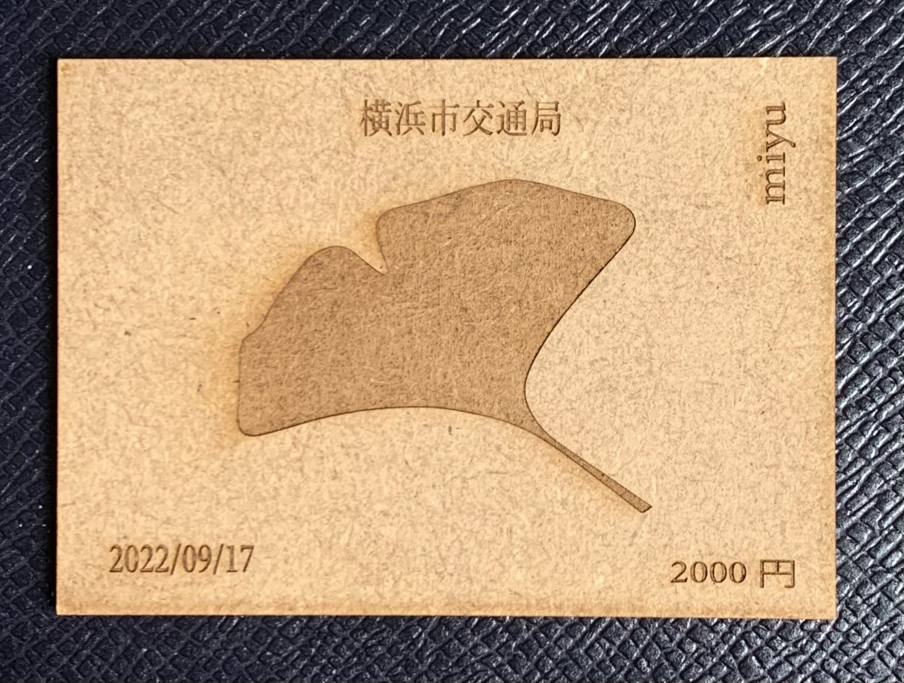

Design for Others
[作品の説明]
新しい交通系ICカード
ある日、駅のホームで落ち葉まみれのおじいさんが。
自分の服に付いている落ち葉を全く気にすることなく話に夢中。
もしもこのおじさんの横を取り過ぎたら自分も服に落ち葉が付いてしまう、、、。
世代が違うと価値観も違うこともある。
→そこで！世代ごとに車両を分けようという案になる。
(親子専用車両など臨機応変できたらいいと思う。
)
その問題の分け方は落ち葉の種類や色で車両分け！
ICチップ入りにする事でSuicaやPASMO代わりにもなる。
この作品のポイントとしては世代別にカードの種類が違うので盗難防止にも。
変更前のデザイン(キーホルダーの案の時)

変更後のデザイン(ICカードに変更)
